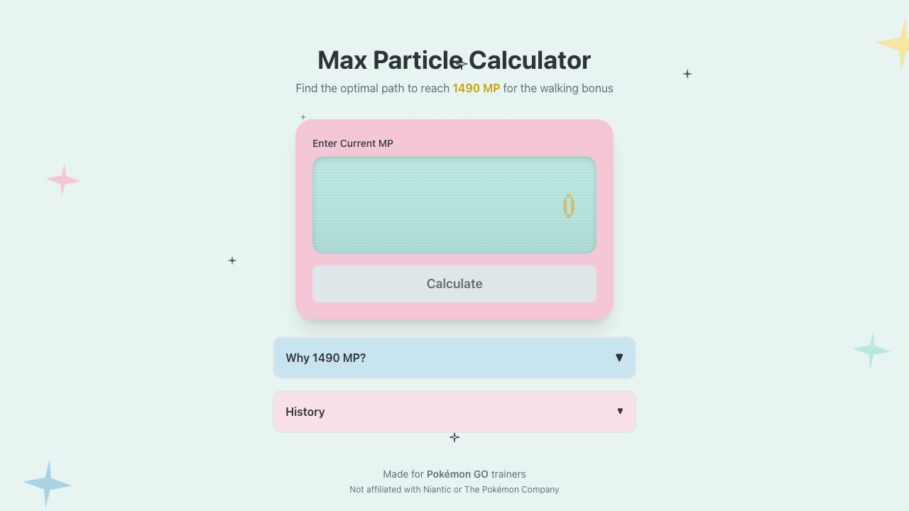
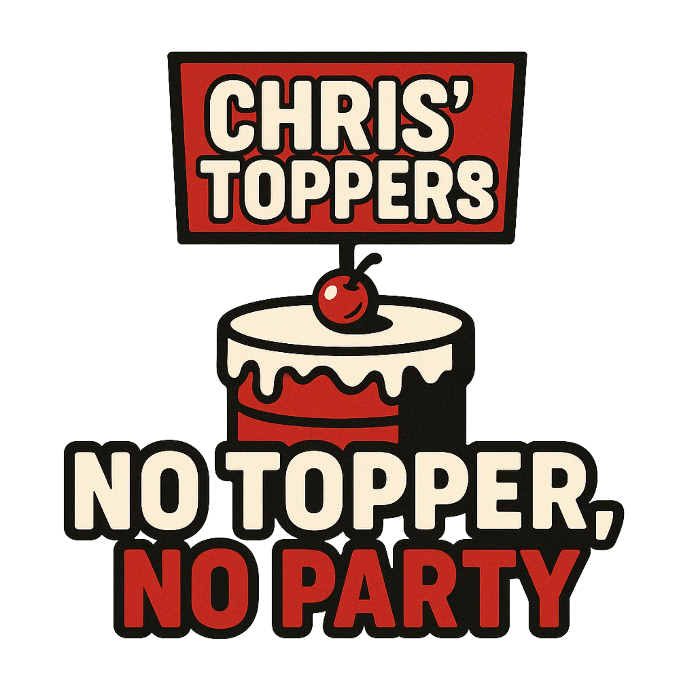
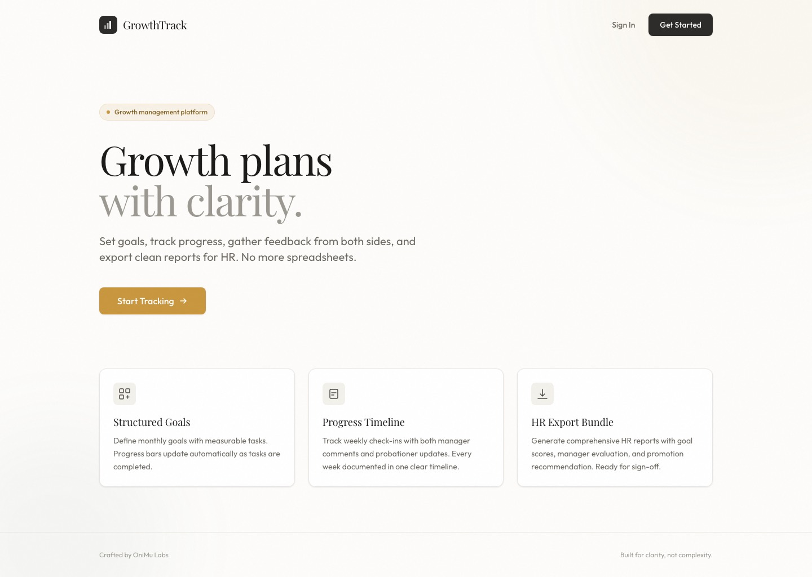

Utility ToolDecision support for players
Max Particle Calculator
Next.js • TypeScript • Tailwind
something is waking up...
Independent builder for AI-assisted products, prototypes, and unusually thoughtful web interfaces.
I translate rough ideas into interfaces that feel deliberate, useful, and ready to ship.
Selected builds from an agentic coding practice
This portfolio is a focused record of product work shaped by design judgment, engineering discipline, and AI in the loop.
Each card includes the context, stack, and live link.
I gravitate toward compact products with strong information hierarchy, careful motion, and interfaces that earn trust quickly.

Utility ToolDecision support for players
Next.js • TypeScript • Tailwind

Client PortfolioFamily brand, elevated online
Next.js • React • Supabase

People Ops SaaSProbation plans without spreadsheets
Next.js 16 • Better Auth • Drizzle
Working Style
I work between product thinking, visual systems, and implementation detail. The goal is software that feels considered, not merely functional.
Start with the core task, reduce friction, then add character only where it improves comprehension or trust.
Strong hierarchy, calm interaction patterns, mobile resilience, and interfaces that can survive real use instead of just screenshots.